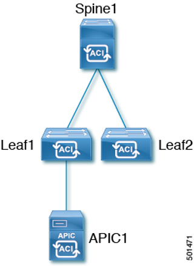
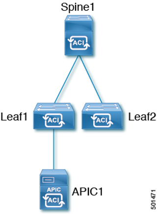

演示场景1 ACI Zero Touch Provision上线
ACI Simulator是一个基于VM的ACI模拟器，用于模拟ACI控制平面的用户界面和配置过程。基本的模拟拓扑如下图所示，在本演示中，我们将利用Simulator演示ACI上线的过程。

注意：ACI Simulator只能展示控制平面的配置过程，无法模拟数据转发平面，也就是说在Simulator中无法产生真正的数据流。
ACI Simulator是一个基于VM的ACI模拟器，用于模拟ACI控制平面的用户界面和配置过程。基本的模拟拓扑如下图所示，在本演示中，我们将利用Simulator演示ACI上线的过程。

注意：ACI Simulator只能展示控制平面的配置过程，无法模拟数据转发平面，也就是说在Simulator中无法产生真正的数据流。